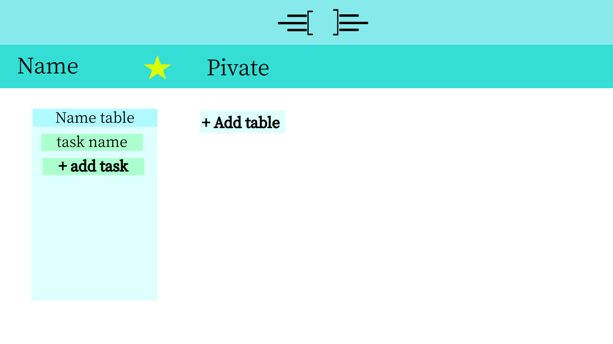
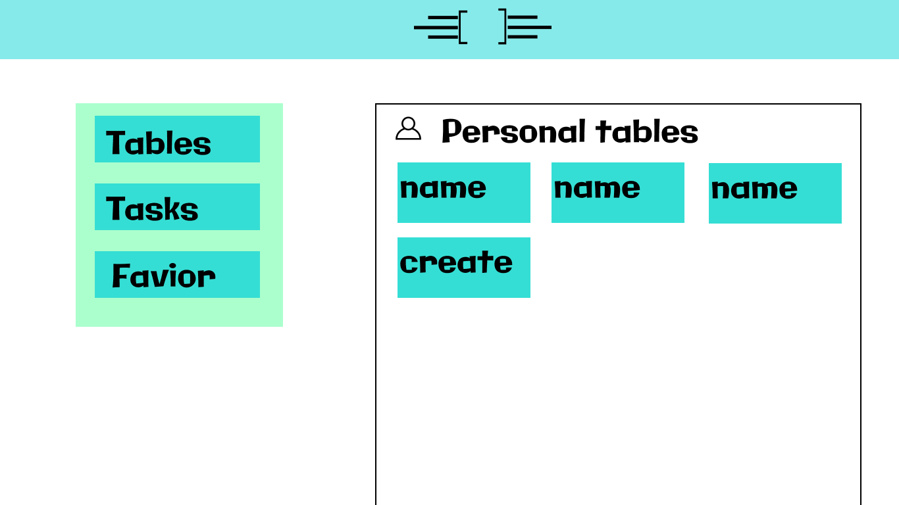

Start Work
Increase your productivity with TBT
TBT's tables helps your to organize you work process
Sign Up
Work anywhere
Whether it’s for work, a side project or even the next family vacation, TBT helps you to stay organized.


Information at a glance
You can keep a list of tasks. The task board will allow you to manage a project using the kanban system.